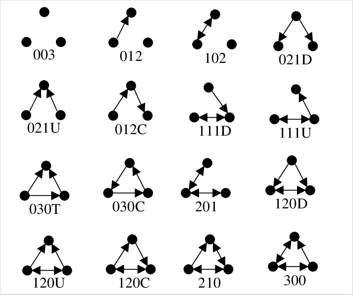

En este tutorial veremos algunos conceptos y herramientas básicas para describir y analizar una red usando el paquete igraph para R.
2.1 Librerías
library(igraph)
Attaching package: 'igraph'
The following objects are masked from 'package:stats':
decompose, spectrum
The following object is masked from 'package:base':
union
library(dplyr)
Attaching package: 'dplyr'
The following objects are masked from 'package:igraph':
as_data_frame, groups, union
The following objects are masked from 'package:stats':
filter, lag
The following objects are masked from 'package:base':
intersect, setdiff, setequal, union
2.2 Base de Datos
Los elementos básicos de una red son un conjunto de Nodos y un conjunto de Enlaces.
Nodos: cada componente individual de una red. El tamaño de la red será el número total de nodos que la componen.
Enlaces: Interacciones entre los nodos de la red. Se representan como pares de nodos. Pueden ser dirigidos (nodo emisor -> nodo receptor) o no dirigidos (nodo 1 <-> nodo 2). Un nodo puede tener enlaces con uno o varios otros nodos, o con ninguno.
En este ejercicio vamos a usar una base de datos ficticia que va a simular una red de derivaciones de pacientes entre centros. Cada nodo será un centro de salud y cada centro estará enlazado con otro cuando uno de ellos haya derivado pacientes hacia el otro, por lo tanto tenemos una red dirigida (centro emisor -> centro receptor).
2.2.1 Atributos
En una red, tanto los nodos como los enlaces pueden tener características que los describan (por ejemplo podríamos tener algún atributo de cada centro, como el número total de población que atiende, el número de funcionarios, presupuesto anual, etc; o los enlaces podrían caracterizarse por el número de pacientes promedio diario que derivan, el traspaso de recursos de un centro a otro, etc). En el caso de este ejemplo, cada enlace tiene el atributo “n”=número total de pacientes derivados en un año.
Los enlaces pueden tener distintos pesos, los pesos de los enlaces nos sirven para comparar las relaciones entre los distintos nodos. No es obligatorio que los enlaces tengan peso (puede haber redes en que todos los enlaces tengan igual peso). En este ejercicio usaremos el atributo “n” como el peso de cada enlace.
2.2.2 Lectura
Cargamos los datos del archivo de texto, que contiene una columna con los nodos emisores, otra con los nodos receptores y otra columna con el atributo “n” de cada enlace.
Ahora vamos a convertir el Data Frame que acabamos de crear en un objeto “igraph” para trabajar con las funciones del paquete.
La función graph_from_data_frame puede tener como input el data frame completo, en ese caso leerá las primeras dos columnas como los nodos de input y output y el resto de columnas como atributos de los enlaces. La variable directed la usamos para indicar si es una red dirigida (T: true) o no (F: false).
Opcionalmente se le puede pasar a la función un vector con los nodos (esto último es útil en caso de que hayan nodos isla, si no se entrega ese vector los nodos los extrae de los enlaces).
net <- graph_from_data_frame(dataframe, vertices=vector_nodos, directed=T)
# Convirtiendo los datos a un objeto de igraph:net <-graph_from_data_frame(links, directed=T)
Podemos remover los enlaces repetidos y los enlaces que son de un mismo nodo hacia si mismo (loops):
# Sacamos los loops del grafo:net <-simplify(net, remove.multiple = T, remove.loops = T)
2.2.3 Matriz de adyacencia
La matriz de adyacencia es otra manera de representar una red, es una matriz que tiene en los ejes x e y los nodos de la red y cada valor de la matriz es 1 si existe ese enlace y 0 si no.
# Si lo necesitamos, podemos extraer la lista de enlaces (edgelist) o la matriz desde la red de igraph.as_adjacency_matrix(net)
Una propiedad clave de cada nodo es su grado, que representa el número de enlaces que tiene con otros nodos. Usualmente se denomina con k_i el grado del i-esimo nodo de la red. En una red dirigida vamos a hablar de in-degree para la cantidad de enlaces que llegan dirigidos hacia un nodo, y de out-degree para la cantidad de enlaces que salen desde un nodo hacia otros.
Una medida descriptiva interesante de una red es la distribución de grado, es decir, cuantos nodos tenemos con cada cantidad de enlaces. Esta distribución nos puede dar pistas sobre la estructura de la red (aleatoria, de mundo pequeño, libre escala).
# distribucion de gradogrado.dist <-degree_distribution(net)grado.tabla <-matrix(c(seq(0:10),100*grado.dist),byrow=F,ncol=2)grado.tabla <-as.data.frame(grado.tabla)colnames(grado.tabla) <-c("Grado","Porcentaje")grado.tabla
La densidad de la red es la proporción de enlaces existentes, se calcula como el número total de enlaces (orden de la red) sobre el número total de enlaces posibles (si todos los nodos estuvieran conectados con todos, es decir, un grafo completo).
net.densidad <-edge_density(net)net.densidad
[1] 0.2651515
Por ejemplo, en ciencias sociales, una red de personas densa podría indicar un mayor capital social de vinculación .
2.3.3 Clustering
El clustering de un nodo es la densidad del nodo, es decir, el número de enlaces del nodo, dividido por el número total de enlaces que podrían formar los vecinos del nodo entre ellos.
Por ejemplo, si analizamos una red de personas y nos interesa estudiar contagio, podríamos pensar que un nodo con mayor clustering es un vector más probable de contagio.
Una red puede ser dividida en sub redes o componentes cuando hay grupos de nodos que no son alcanzables por otro grupo. En una componente todos los nodos están enlazados a algún otro nodo.
Si en una red todos los nodos son alcanzables por algún camino se dice que es un grafo completo.
La sub red que contiene más nodos se denomina Componente Principal.
g <-which.max(componentes$csize) # identificamos el gigantesubred <-induced.subgraph(net, which(componentes$membership == g)) # nos quedamos con el componente giganteV(net)
Las triadas son conjuntos de 3 nodos, que son la “célula” mínima de una red. En una red dirigida existen múltiples maneras en que 3 nodos pueden estar conectados entre sí. Puede ser interesante saber cuantos tipos de triadas de cada tipo (o de alguno en particular) tiene la red.

triad_census(net)
[1] 68 23 102 0 0 1 1 1 0 0 13 0 0 0 3 8
Las triadas triangulares son particularmente interesantes para analizar redes sociales, dan cuenta de la fortaleza de los lazos, la estabilidad de los lazos y puede ser un indicador de confianza.
Las medidas de centralidad se utilizan para identificar los nodos más importantes de una red bajo distintos criterios. Las medidas de centralidad más utilizadas son:
Centralidad de Grado (degree centrality) : Está definida como el grado del nodo. Sirve para identificar los nodos más “populares” de la red.
Centralidad de Intermediación (betweeness centrality): Mide la cantidad de caminos más cortos entre otros dos nodos que pasan por ese nodo.
Centralidad de Cercanía (closeness centrality): Se calcula como la suma de los caminos más cortos de ese nodo hacia los otros. Esta medida sirve para detectar nodos que pueden difundir información de forma más eficiente.
Centralidad de Vector Propio (eigenvector centrality): la centralidad de un nodo es una ponderación de la centralidad de los nodos que lo rodean, es decir, un nodo es más central bajo esta medida si está conectado con otros nodos que también son centrales.
En este estudio https://www.ncbi.nlm.nih.gov/pmc/articles/PMC7217518/ analizan las distintas medidas de centralidad para determinar nodos críticos en la dispersión de enfermedades infecciosas. En el estudio indican que:
Los nodos con alta centralidad de grado pueden contagiar a muchas personas, sin embargo, si estos nodos están en la periferia y alejados de los otros nodos de la red, no aportan a la dispersión. Por lo que otras medidas de centralidad también son relevantes de analizar.
La centralidad de vector propio ayuda a identificar nodos que están cercanos a varios nodos centrales, estos nodos son personas que de infectares podrían propagar la enfermedad más rápidamente, al igual que los nodos con más centralidad de cercanía.
Los nodos con alta centralidad de intermediación son nodos que de contagiarse, pueden transmitir la enfermedad a diferentes partes de la red.
Calculemos las centralidades de nuestra red.
# Calcular grado de centralidad (degree centrality) centralidad_grado <- igraph::degree(net) # Calcular centralidad de cercanía centralidad_cercania <- igraph::closeness(net, normalized = T) # Calcular la centralidad de intermediacióncentralidad_intermediacion <- igraph::betweenness(net, normalized = T)# Calcular la centralidad de vector propiocentralidad_eigen <-igraph::eigen_centrality(net)